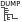
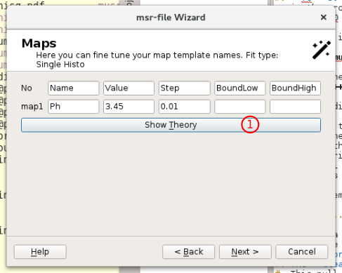

musredit: the GUI Based Interface to musrfit¶
Introduction¶
musredit is an editor which also provide a graphical user interface to the programs contained in the musrfit suite and are intended
to help the user handle musrfit msr files. It is implemented in C++ and use the Qt framework. musredit is based on Qt 4.6 or Qt 5.6 (or above).
The Qt 5.6 version of musredit will be actively developed, whereas the Qt 4.x version will only get bug fixing and eventually will be dropped.
On this documentation page only the features related to musrfit are described — the basic editor functions which should be self-explanatory are not.
musrgui is an outdated early version of musredit and will not described anymore. If still in use, the user is urged to switch to musredit.
Note
Before going on using musredit it is strongly recommended to read the manual of musrfit first!
Available Executable, Configuration Files and their Basic Usage¶
musredit (musrgui)¶
musredit (musrgui) is the editor executable. If called from within a shell it accepts a few optional parameters:
- <msr-files>
File names of the msr files that should be opened in separate editor tabs on startup of
musredit.- - -help
Displays a small help notice in the shell explaining the basic usage of the program.
- - -version
Prints the version number of
musredit.
If called without any parameters an empty editor window opens.
musredit_startup.xml¶
musredit_startup.xml is the configuration file located under $HOME\.musrfit\musredit. It is also possible to have another version
of this file in the working directory which then will be used!
In this file the following XML tags are allowed to define settings and might proof useful for all users of musredit:
- <general></general>
set the default paths to executable and files in this environment
- <exec_path>PATH_TO_EXEC</exec_path>
set the path
PATH_TO_EXECwhere the executablemusrfit,musrview,musrt0, etc. can be found (inside the<general>environment)- <default_save_path>SAVE_PATH</default_save_path>
specify the path
SAVE_PATHwheremusreditpoint by default when opening and saving msr files (inside the<general>environment). Default is the current directory.- <msr_default_file_path>MSR_DEF_PATH</msr_default_file_path>
set the path
MSR_DEF_PATHwhere the default msr files provided bymusreditare stored (inside the<general>environment)- <timeout>3600</timeout>
timeout in seconds after which musrview canvas will automatically quit. A value of 0 or a negative number will keep the
musrviewcanvas open without self-determination.- <keep_minuit2_output>y/n</keep_minuit2_output>
flag indicating if the
MINUIT2output shall be kept per msr-file (‘y’) or only for the current msr-file (‘n’).- <dump_ascii>y/n</dump_ascii>
flag indicating if
musrfitshall dump fit data into ascii format. See help of musrfit.- <dump_root>y/n</dump_root>
flag indicating if
musrfitshall dump fit data into root format. See help of musrfit.- <title_from_data_file>y/n</title_from_data_file>
specify if
musrfitshould be called with the-toption by default (inside the<general>environment)- <chisq_pre_run_block>y/n</chisq_pre_run_block>
flag indicating if per-run chisq shall be written into the msr-output-file.
- <estimate_n0>y/n</estimate_n0>
flag indicating if for a single histogram fit \(N_0\) shall be estimated before the fit procedure starts.
- <musrview_show_fourier>y/n</musrview_show_fourier>
flag indicating if
musrviewwill directly present the Fourier transform rather than the time domain data.- <musrview_show_avg>y/n</musrview_show_avg>
flag indicating if
musrviewwill directly present averaged data, typically used for Fourier power spectra.- <enable_musrt0>y/n</enable_musrt0>
specify if musrt0 can be called from within
musredit(inside the<general>environment)
- <font_settings></font_settings>
set the default font in this environment
- <font_name>FONT</font_name>
specify the name of the font
FONTto be used by default inmusredit(inside the<font_settings>environment)- <font_size>N</font_size>
specify the size
Nof the font to be used by default inmusredit(inside the<font_settings>environment)
- <msr_file_defaults></msr_file_defaults>
put the default settings for newly created msr files in this environment
- <beamline>BL</beamline>
set the name of the muon beamline
BLhere (inside a<msr_file_defaults>environment)- <institute>INST</institute>
set the name of the facility
INSTwhere the beamlineBLis located. Valid settings arePSI,RAL,JPARC, andTRIUMF(inside a<msr_file_defaults>environment)- <file_format>FF</file_format>
specify the default data file format
FFhere. Valid formats areNEXUS,MUSR-ROOT,ROOT-NPP,ROOT-PPC,PSI-BIN,PSI-MDU,MDU-ASCII,WKM,MUD,ASCII, andDB(inside a<msr_file_defaults>environment)- <lifetime_correction>y/n</lifetime_correction>
choose if by default the
lifetimecorrectionoption should be set (inside a<msr_file_defaults>environment)
- <msr2data_defaults></msr2data_defaults>
define the default options for calling msr2data in this environment; the options set here are ticked by default in the graphical interface of
musredit.- <chain_fit>y/n</chain_fit>
(un)set the chain fit (!) option (inside a
<msr2data_defaults>environment)- <write_data_header>y/n</write_data_header>
(un)set the noheader option (inside a
<msr2data_defaults>environment)- <ignore_data_header_info>y/n</ignore_data_header_info>
(un)set the nosummary option (inside a
<msr2data_defaults>environment)- <keep_minuit2_output>y/n</keep_minuit2_output>
(un)set the
-koption (inside a<msr2data_defaults>environment)- <write_column_data>y/n</write_column_data>
(un)set the
dataoption (inside a<msr2data_defaults>environment)- <create_msr_file_only>y/n</create_msr_file_only>
(un)set the
msroption in case a template run is specified (inside a<msr2data_defaults>environment)- <fit_only>y/n</fit_only>
(un)set the
fitoption in case no template run is specified (inside a<msr2data_defaults>environment)- <global>y/n</global>
(un)set the
globaloption (inside a<msr2data_defaults>environment)- <global_plus>y/n</global_plus>
(un)set the
global+option (inside a<msr2data_defaults>environment)- <recreate_data_file>y/n</recreate_data_file>
(un)set the
musreditoption for recreating the output file (inside a<msr2data_defaults>environment)- <open_file_after_fitting>y/n</open_file_after_fitting>
(un)set the
musreditoption for opening msr files after fitting (inside a<msr2data_defaults>environment)
Additionally, there are some settings defined in this XML file which should be only changed by experienced users who like to add new features to musredit:
- <help_section></help_section>
define various help messages in this environment
- <musr_web_X>LINK</musr_web_X>
define the
LINKto the help pagemusr_web_X, whereXismain,title,parameters,theory,functions,run,command,fourier,plot,statistics,msr2data, ormusrFT(inside a<help_section>environment)
- <func_pixmap_path>PIX_PATH</func_pixmap_path>
set the path
PIX_PATHto LaTeX pixmaps visualizing the various supported theory functions- <theory_functions></theory_functions>
define the functions for a msr file’s THEORY block according to the correct syntax in this environment
- <func></func>
specify a function here (inside a
<theory_functions>environment)- <name>NAME</name>
the
NAMEof the function in the msr file (inside a<func>environment)- <comment>COMMENT</comment>
description of the used parameters (inside a
<func>environment)- <label>LABEL</label>
LABELof the function in themusreditmenu (inside a<func>environment)- <pixmap>PIXMAP</pixmap>
LaTeX picture used to describe the function and stored in the
PIX_PATH(inside a<func>environment)- <params>N</params>
number of parameters
Nused by the function (inside a<func>environment)
An example of the musredit_startup.xml looks like:
<?xml version="1.0" encoding="UTF-8"?>
<musredit_startup xmlns="http://lmu.web.psi.ch/musrfit/user/MUSR/MusrGui.html">
<comment>
This is handling default setting parameters for the musredit.
</comment>
<general>
<exec_path>/usr/local/root/bin</exec_path>
<default_save_path>./</default_save_path>
<msr_default_file_path>/usr/local/root/share/doc/musrfit/templates</msr_default_file_path>
<timeout>3600</timeout>
<keep_minuit2_output>n</keep_minuit2_output>
<dump_ascii>n</dump_ascii>
<dump_root>n</dump_root>
<title_from_data_file>y</title_from_data_file>
<chisq_per_run_block>n</chisq_per_run_block>
<estimate_n0>y</estimate_n0>
<musrview_show_fourier>n</musrview_show_fourier>
<musrview_show_avg>n</musrview_show_avg>
<enable_musrt0>y</enable_musrt0>
</general>
<recent_files>
<path_file_name>/usr/local/root/share/doc/musrfit/examples/test-histo-PSI-BIN.msr</path_file_name>
</recent_files>
<help_section>
<musr_web_main>file:///usr/local/root/share/doc/musrfit/html/user/MUSR/MusrFit.html</musr_web_main>
<musr_web_title>file:///usr/local/root/share/doc/musrfit/html/user/MUSR/MusrFit.html#TheTitle</musr_web_title>
<musr_web_parameters>file:///usr/local/root/share/doc/musrfit/html/user/MUSR/MusrFit.html#TheFitparameterBlock</musr_web_parameters>
<musr_web_theory>file:///usr/local/root/share/doc/musrfit/html/user/MUSR/MusrFit.html#TheTheoryBlock</musr_web_theory>
<musr_web_functions>file:///usr/local/root/share/doc/musrfit/html/user/MUSR/MusrFit.html#TheFunctionsBlock</musr_web_functions>
<musr_web_run>file:///usr/local/root/share/doc/musrfit/html/user/MUSR/MusrFit.html#TheRunBlock</musr_web_run>
<musr_web_command>file:///usr/local/root/share/doc/musrfit/html/user/MUSR/MusrFit.html#TheCommandsBlock</musr_web_command>
<musr_web_fourier>file:///usr/local/root/share/doc/musrfit/html/user/MUSR/MusrFit.html#TheFourierBlock</musr_web_fourier>
<musr_web_plot>file:///usr/local/root/share/doc/musrfit/html/user/MUSR/MusrFit.html#ThePlotBlock</musr_web_plot>
<musr_web_statistic>file:///usr/local/root/share/doc/musrfit/html/user/MUSR/MusrFit.html#TheStatisticBlock</musr_web_statistic>
<musr_web_msr2data>file:///usr/local/root/share/doc/musrfit/html/user/MUSR/Msr2Data.html</musr_web_msr2data>
<musr_web_musrFT>file:///usr/local/root/share/doc/musrfit/html/user/MUSR/MusrFit.html#A_2.3_musrFT</musr_web_musrFT>
</help_section>
<font_settings>
<font_name>Monospace</font_name>
<font_size>12</font_size>
</font_settings>
<msr_file_defaults>
<beamline>mue4</beamline>
<institute>psi</institute>
<file_format>musr-root</file_format>
<lifetime_correction>y</lifetime_correction>
</msr_file_defaults>
<msr2data_defaults>
<chain_fit>y</chain_fit>
<write_data_header>y</write_data_header>
<ignore_data_header_info>n</ignore_data_header_info>
<keep_minuit2_output>n</keep_minuit2_output>
<write_column_data>n</write_column_data>
<recreate_data_file>n</recreate_data_file>
<open_file_after_fitting>y</open_file_after_fitting>
<create_msr_file_only>n</create_msr_file_only>
<fit_only>n</fit_only>
<global>n</global>
<global_plus>n</global_plus>
</msr2data_defaults>
<func_pixmap_path>/usr/local/root/share/doc/musrfit/latex_images</func_pixmap_path>
<theory_functions>
<func>
<name>asymmetry</name>
<comment></comment>
<label>Asymmetry</label>
<pixmap>asymmetry.png</pixmap>
<params>1</params>
</func>
<func>
<name>statGssKT</name>
<comment>(rate)</comment>
<label>static Gauss KT</label>
<pixmap>statGssKT.png</pixmap>
<params>1</params>
</func>
</theory_functions>
</musredit_startup>
musredit Features¶
The features of musrfit which can be accessed by the graphical front ends musredit will be described in the following. All functions
can either be called by choosing them from the MusrFit menu, by clicking the respective button in the MusrFit bar, or by using a keyboard shortcut.
musrWiz
musrWizis a helper programs which allows to create a msr-file from scratch without too much a priori knowledge. For details see musrWiz.
Calculate Chisq
Calls
musrfitwith the option-c, i.e. calculates the \(\chi^2\) or log max-likelihood for the active msr file tab. Shortcut-key:Alt+C. The equivalent call on the command line would be$ musrfit -c <msr-file>

Fit
Calls
musrfitfor fitting of the active msr file in the currently active tab. Shortcut-key:Alt+F. The equivalent call on the command line could look like$ musrfit <msr-file> [optional parameters]The optional parameters may be chosen under Preferences. For further information refer to the manual of musrfit.

Swap Msr <-> Mlog
Swap the msr and mlog files. E.g., for a file called
8472_zf.msr, this is copied to8472_zf.mlogand vice versa. Shortcut-key:Alt+S.
Set Steps
musrStepallows to adjust the step size, i.e. the initial steps for the fitter. Shortcut-key:Alt+P.

Msr2Data
Opens a graphical interface to the
msr2dataprogram described in detail in its own manual. Shortcut-key:Alt+2.

mupp
Application which allows to plot
*.dband*.datparameter files. Shortcut-key:Alt+U. For a detailed description see the mupp docu.
View
Calls
musrviewfrom the active tab ofmusredit. For more details see the musrview docu. Shortcut-key:Alt+V. The equivalent call on the command line could look like$ musrview <msr-file> [optional parameters]

T0
Calls
musrt0which allows to set theT0values for all the runs. For more details see the musrt0 docu. The equivalent call on the command line could look like$ musrt0 <msr-file> [optional parameters]
Raw Fourier
Calls
musrFTwhich allows to perform a Fourier transform of the raw data. For more details see the musrFT docu. The equivalent call on the command line could look like$ musrFT <msr-file> [optional parameters]
Preferences
Opens a window in which the optional parameters that should be passed to musrfit can be chosen. For further information refer to the manual of musrfit.

Dump Header
Opens a file dialog which allows to select a μSR data file. When this file can be read, the run header info is dumped into a dialog window. Essentially this calls
dump_headerinternally.
musrWiz¶
musrWiz is a helper program which allows to easily create the necessary msr-file needed as an input for musrfit.
musrWiz is still in it’s early stage; not all options are already implemented and here and there you will likely find some bugs.
From musredit it can be accessed via the MusrFit menu or the wand

The musrWiz GUI is organized in a couple of different dialogues which some information needs to be provided by the user.
In the following these different dialogues will be discussed briefly.
musrWiz-Introduction¶
The introduction dialogue
an explicit msr-file name can be provided here. More often the msr-file name is generated out of the run number.
year of the run data.
run number. If no explicit msr-file is provided, the run number together with fit type and type of measurement will be used to generate the msr-file name.
from the pull down menu the institute (for which a necessary
xml-file is provided) has to be choosen.from the pull down menu the the instrument can be chosen.
the fit type has to be chosen. Possible fit types are:
Single Histo/Single Histo RRF/Asymmetry/Asymmetry RRF/Mu Minus/None muSRtype of measurement is essentially needed for the grouping of the detectors. Possible are:
ZFfor zero field measurements /TFfor transverse field measurements /LFfor longitudinal field measurements. Depending on the choice and instrument some additional question might be asked, e.g. which magnet has been used.T0’s: this last menu defines from where to get the t0’s. The options are:from data file, i.e. the t0 are assumed to be correctly set in the provided data filecall musrT0, i.e. after the msr-file is generated,musrt0will be called which allows the user to find the proper t0 from the prompt peakenter herewill provide a pop-up menu where the t0 parameter can be given explicitly.
If all this information have been provided Next> will lead you the the theory dialogue.
musrWiz - Theory¶
The theory dialogue is used to define the fitting function. There are two ways of using it:
choose a template theory function. This option has the advantage that the next steps will be very easy because within the template almost everything is already pre-defined. The disadvantage is that you are not free in setting up your theory function as you would like to have.
freely write your theory function. The advantage here is that you can customize your theory function at your needs. This will come at the cost that you also will need to define
maps,functions, etc. yourself. The good thing though is that at the very end you can save this as a template for future re-use.
First the template path will be described. The theory dialogue looks like this

This is a text edit field were you can enter the theory fit function as you would like to have it. In the example given the theory reads \(p1 \exp(-p2\, t) \cos(2 \pi\, f1 + m1)\), where
pXstands for parameter,fXfor function,mXfor map, andXfor the corresponding number.The
Clear Allbutton will clear whatever you entered in the text field above.This pull-down menu allows to select a theory function which will be added to the text field above by pressing the
Addbutton. Pre defined theory function starting with aTare templates rather than only theory function strings.The
Addbutton is used to add the chosen theory function / template from the pull-down menu to its left.The
Checkbutton is used to make a syntactical check of whatever is written in the text edit field.
musrWiz - Functions¶
In the Functions dialogue all the necessary functions can be entered. A function operates only on fitting parameters. This is different to the theory function which operates on the fitting parameters and the time. The dialogue looks like this
a text edit field in which the various needed functions can be entered. In case a template theory is used, the appropriate function should be shown here and no editing will be needed here.
pressing
Show Theorybutton will pop-up a little window showing the previously entered theory function. This is handy when defining its own theory, i.e. not working with a template.
musrWiz - Maps¶
The map dialogue will list the maps previously used in the theory and functions blocks/dialogues before. Again, if a template is used, nothing needs to be entered here.
The
Show Theorybutton allows to show the currently defined theory and the functions.
musrWiz - Fit Parameters¶
In the fit parameter dialogue all parameter names can be defined. Furthermore the starting values for the parameters, the step (initial step size for the parameter fit), and any boundaries can be defined here.
The
Show Theorybutton allows to show the currently defined theory and the functions.
musrWiz - Fit Info¶
Collects all the musrfit and MINUIT2 specific fit commands.
allows to define the time fit range (start time, end time).
packing defines how many bins of the original data shall be combined (added, also called re-binning).
in this text field to fitting commands are given (see the
MINUITand musrfit manual for details).
musrWiz - Create¶
Collects the last necessary information before creating the msr-file.
shows the path where the msr-file will be saved. If you would like to save it somewhere else press the
Save As (msr-file path)button.pressing this button will allow you to find the path where to save the msr-file.
pressing this button will save to current configuration as a template for future re-use.
musrStep¶
musrStep is a little helper program which allows to reset the initial step size. This sometimes comes very handy if working on an instrument
with many detectors after a fit slightly went wrong leaving you with a far too small initial step size for further iterations. To edit all the steps
individually is tedious and error prone. Here musrStep can help.
When invoking musrStep the above dialogue will popup
shows the relevant parts of the FITPARAMETER block. The only editable column is step.
Check Specificwill popup a dialogue where a template string can be entered, e.g.Asym. As a result all fit parameters containing the template string will be selected.Check Allwill select all fit parameters.Uncheck Allwill unselect all fit parameters.Modify Automaticwill change all the step values automatically. It basically sets all the step sizes to 1% of the corresponding fit parameter value, except the phases where the step will be set to a value of 5 degrees.Modify Selectedwill start the dialogue shown beneath. Follow the description there.Save&Quitwill save the current step values, close the dialogue and reload the modified msr-file.Cancelwill cancel themusrStepdialogue without modifying anything.

When clicking on Modify Selected the above dialogue will be presented. It allows to manipulate all selected fit parameter step values according to the following rules
Scale by Factorwill scale the step value by the factor given in the field (2). If theAbsolute Valuecheck box is selected, rather than scaling the factor value will be used to modify the step value.scaling factor or absolute value to modify the step values of the selected fit parameters.
checking the
Absolute Valuecheck box will change the meaning from Scale by Factor to Copy Factor Value.Scale Automaticallywill modify the step values of the selected fit parameters according to the rules described before.Cancelwill cancel the dialogue.